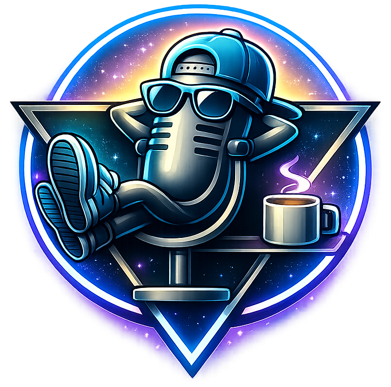

PodSlacker.AI-generated summaries, podcasts, screenshots & transcripts — instantly.
A SlackCast is what PodSlacker creates when you point it at a YouTube video. It's not a transcript dump or a bullet-point summary — it's a complete, self-contained page that gives you everything you'd want to know about a video without watching it.
A written summary of the key ideas. A generated podcast episode — two hosts discussing the content naturally, or a solo narrator walking you through it. Visual snapshots from the most important moments. A full clickable transcript that jumps straight to any second in the video. All packaged into one shareable page, ready in minutes.
Think of a SlackCast as the smart version of "I'll watch it later" — where later means right now, in whatever format fits your next twenty minutes.
A rich media digest of a YouTube video produced by PodSlacker, comprising a written summary, a generated podcast episode, key-moment screenshots, and a full timestamped transcript — delivered as a single shareable HTML page.
A structured breakdown of the video's main ideas, key arguments, and takeaways — clear enough to have an informed opinion in two minutes rather than forty. Not a transcript dump. An actual summary.
PodSlacker generates a conversational audio version of the content. Two hosts discuss the material naturally, or a single narrator walks you through it — your choice. Listen during your commute, your workout, or while you're making dinner. The content comes with you.
Visual snapshots from the most significant points in the video give you a feel for what you'd actually be watching: the slides, the diagrams, the demonstrations. Useful for quickly gauging whether a technical tutorial is pitched at the right level, or whether a talk covers the ground you actually need.
The full timestamped transcript is there when you want it — searchable, readable, and linked directly back to the exact moment in the video. No more scrubbing through a timeline trying to find the one part you half-remember.
Everything — summary, audio player, key moment images, and transcript — is packaged into a single self-contained page that opens in any browser. Share it with a colleague, save it for reference, or publish it to GitHub Pages. No account required, no link that expires.
Everyone processes content differently. Some people want to read first and listen later. Some want a single focused narrator; others find a two-host conversation easier to stay with on a long commute. Some want a quick visual overview; others want more.
PodSlacker accommodates that. The hosts' names, format, depth of coverage, the AI provider powering it — these are all adjustable. Your SlackCasts adapt to how you want to use them.
PodSlacker won't replace watching things that are genuinely worth watching. It's not trying to.
It makes the triage process dramatically faster — so the time you do invest goes toward content that actually deserves it. You stop watching things out of obligation or optimism. You start watching things because you already know they're worth it.
A SlackCast is your preview, your shortcut, and your safety net — all at once.
Real YouTube videos, turned into SlackCasts. Each page has a summary, generated podcast, key moment screenshots, and a full clickable transcript — ready in minutes, no watching required.
Yes, even Rick Astley deserves a SlackCast. A deep dive into the 1987 synth-pop anthem that became the internet's greatest prank — featuring soaring vocals, impeccable choreography, and a bass line that absolutely slaps. You've been rickrolled. Now get the podcast episode.
What if AI agents could build their own interfaces instead of dumping text at you? This talk introduces Generative UI — a framework where agents dynamically compose buttons, forms, and screens on the fly using the open A-to-I protocol. The result: apps that adapt to the user's context and goals in real time rather than presenting a fixed layout everyone has to navigate the same way.
A fast-moving product showcase from DeepMind executives covering the full Gemini roadmap: Gemini 3.1's multimodal reasoning, open-source Gemma models, Gemini Live for expressive voice AI, the Lyria music-generation model, a Deep Research Agent, the Genie 3 interactive 3D world model, and Gemini Robotics. A lot of announcements packed into one session — exactly the kind of video that benefits from a SlackCast first.